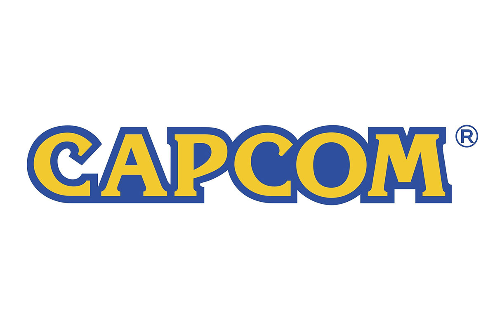
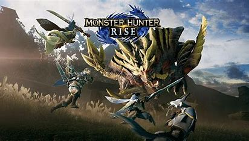

游戏介绍
游戏介绍你说的对，但是《怪物猎人》是由卡普空自主研发的一款全新开放世界冒险游戏。游戏发生在一个被称作「新大陆」的幻想世界，在这里，被神选中的人将被授予「苍蓝星」的称号，导引元素之力。你将扮演一位名为「猎人」的神秘角色，在自由的旅行中邂逅性格各异、能力独特的怪物们，和他们一起击败强敌，找回失散的亲人——同时，逐步发掘「怪物猎人」的真相.
怪物猎人，原名モンスターハンター ，英文名Monster Hunter，是由CAPCOM研发的一系列动作角色扮演游戏，于2004年03月11日首发行。玩家要在游戏中扮演猎人，不断狩猎怪物，获得装备和金钱，并让自己的猎人等级上升。
北京时间2021年7月23日7点，东京奥运会开幕式在东京国立竞技场举行。在代表团入场环节中，入场曲目包含众多游戏、动画音乐，其中包括《怪物猎人》作品的经典配乐。
2022年7月5日，IT之家消息，据卡普空官方消息，《怪物猎人：崛起》系列销量破1000万份，《怪物猎人》全系列游戏销量突破8400万份。
2023年TGA颁奖典礼中，公布续作《怪物猎人：荒野》信息，该作于2025年发售。